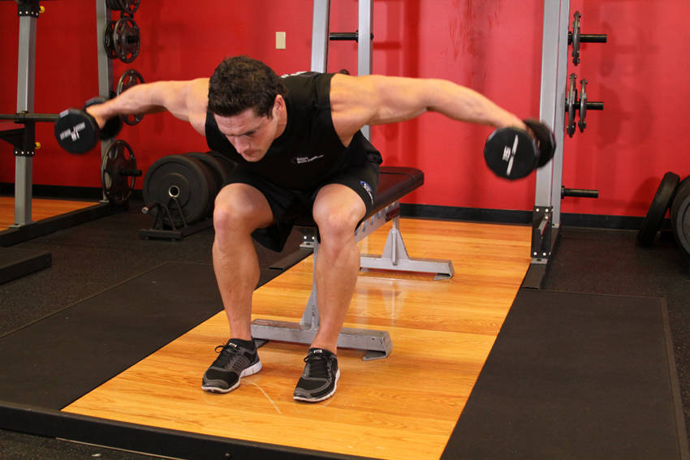

- Place a couple of dumbbells looking forward in front of a flat bench.
- Sit on the end of the bench with your legs together and the dumbbells behind your calves.
- Bend at the waist while keeping the back straight in order to pick up the dumbbells. The palms of your hands should be facing each other as you pick them. This will be your starting position.
- Keeping your torso forward and stationary, and the arms slightly bent at the elbows, lift the dumbbells straight to the side until both arms are parallel to the floor. Exhale as you lift the weights. (Note: avoid swinging the torso or bringing the arms back as opposed to the side.)
- After a one second contraction at the top, slowly lower the dumbbells back to the starting position.
- Repeat for the recommended amount of repetitions.